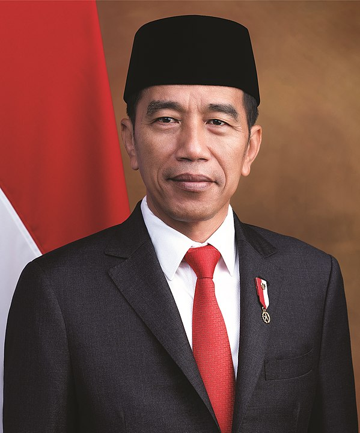
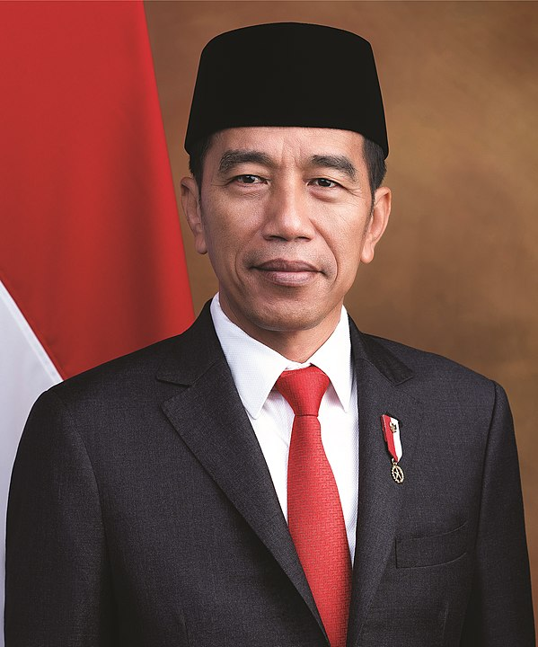
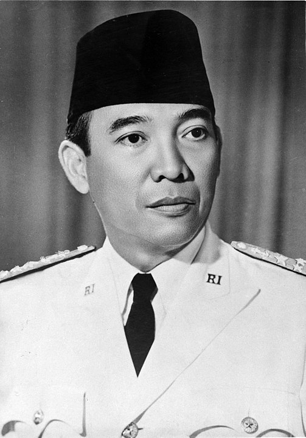
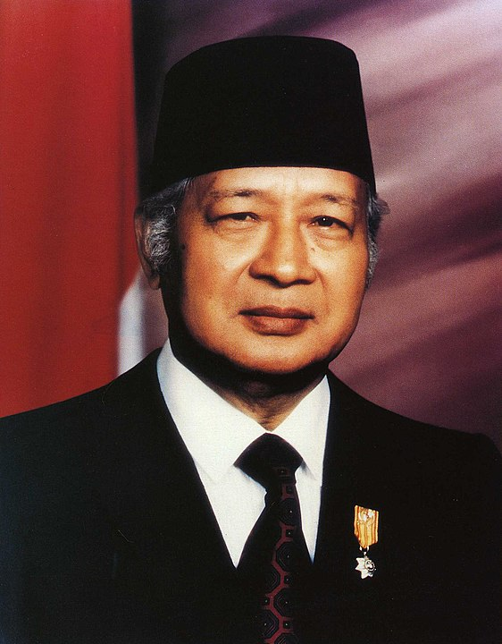
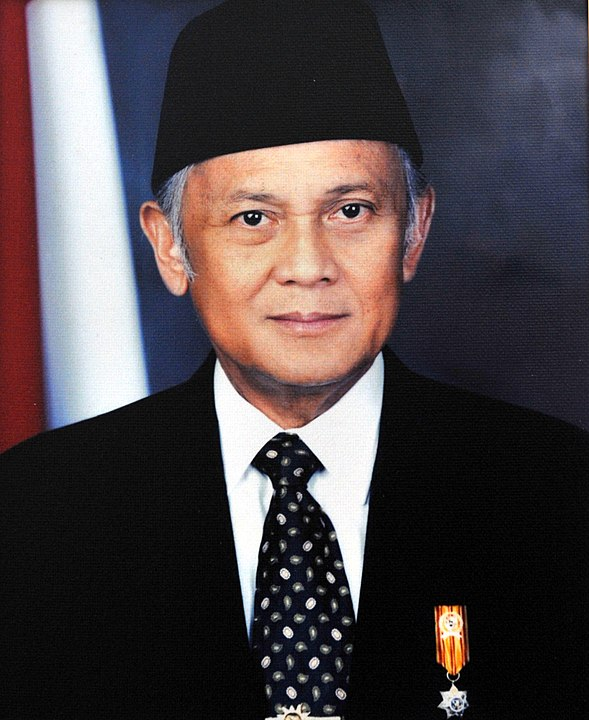
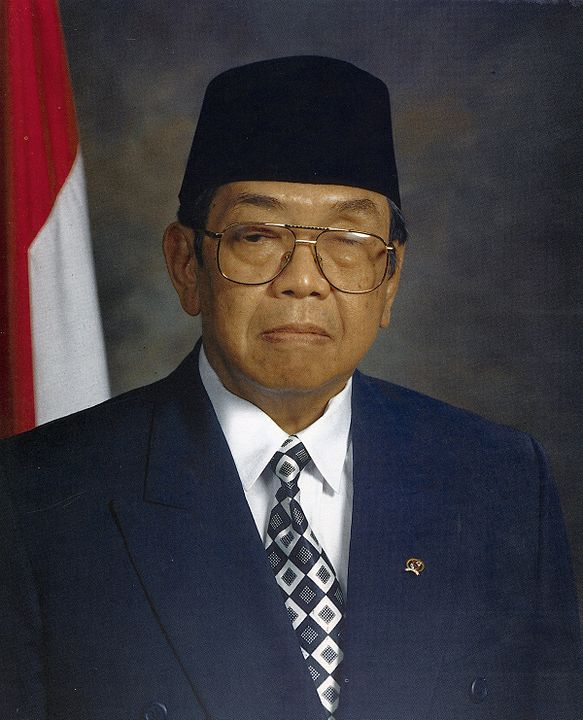
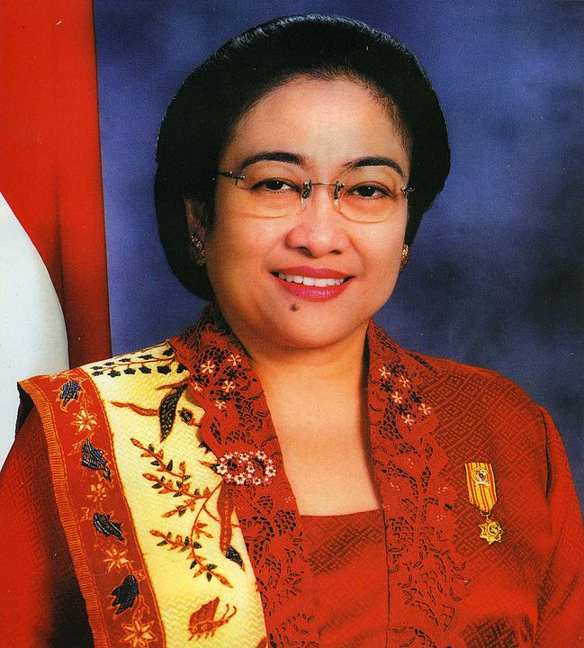
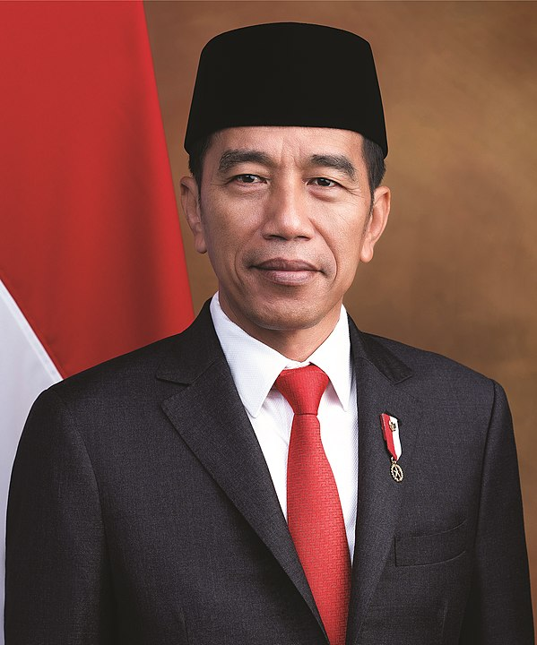

PRESIDEN
Kata presiden berasal atas Bahasa latin. Dalam Bahasa latin presiden juga berasal dari 2 kata yakni pre dan sedere. Pre berarti yang sebelum atau sedere berarti menduduki. Jika kita ditinjau dari arti katanya makan presiden juga berarti sebelum menduduki. Kata menduduki disini akan merujuk pada makna duduk yang juga berarti lebih luas yakni jabatan. Presiden adalah suatu nama jabatan resmi yang sering digunakan untuk pimpinan suatu organisasi, perkumpulan, perusahaan, perguruan tinggi, maupun pimpinan suatu negara.pada Umumnya istilah presiden digunakan untuk seseorang yang memimpin suatu acara atau rapat atau biasa disebut ketua. Namun kata istilah ini secara keseluruhan dapat terus berkembang menjadi istilah yang akan tujukan untuk seseorang yang memiliki kekuasaan ataupun jabatan eksklusif. Secara lebih baiknya. Istilah presiden lebih utama digunakan untuk menyebutkan suatu nama kepala Negara suatu negara yang menganut pemerintahan yang akan berbentuk Republik, baik dipilih secara langsung ataupun tak langsung.
Tokoh Presiden Di indonesia adalah :





